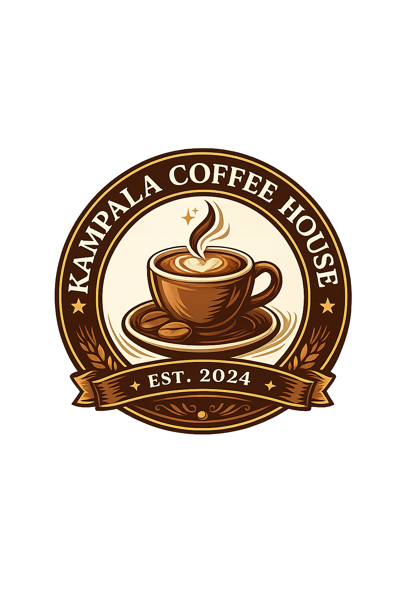

Welcome to Kampala Coffee House
We prepare the mostrated coffee in the town just for you.

We prepare the mostrated coffee in the town just for you.
Welcome to Kampala Coffe House
Experience the perfect blend of rich coffee, fresh pastries, and a warm atmosphere. Whether you're meeting friends, working, or simply relaxing, every cup is crafted to make your day a little better.
Premium Coffee. Fresh Pastries. Cozy Environment
Kampala Coffe House is a popular cafe and meeting spot in Kampala known for serving a variety of freshly brewed coffees,teas,snacks, and light meals in a relaxed environment.Its commonly visited by students,business people, and tourists who want a comfortable place to work,socialize, or unwind. The cafe is appreciated for its calm atmosphere,friendly customer service, and connection to Uganda's rich coffee culture, since Uganda is one of Africa's leading coffee_producing countries.